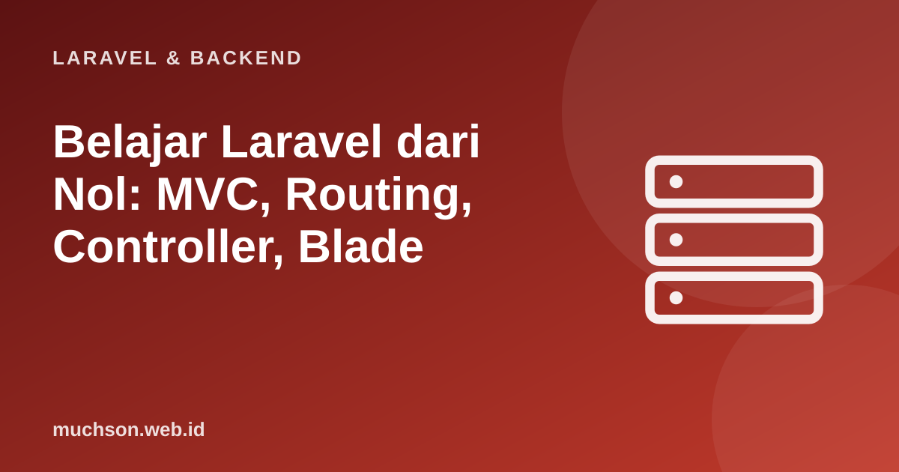

Beranda › Artikel › Laravel & Backend
Laravel & BackendBelajar Laravel dari Nol: MVC, Routing, Controller, Blade
Laravel adalah kerangka kerja PHP yang paling populer untuk membangun aplikasi web. Daya tariknya sederhana: ia menyediakan jawaban yang rapi untuk hal-hal yang selalu Anda butuhkan (routing, basis data, autentikasi, validasi, antrean) sehingga Anda dapat fokus pada logika bisnis. Materi ini membangun gambaran besar: bagaimana satu permintaan bergerak melalui aplikasi Laravel.
Sebaiknya sudah paham: dasar PHP (variabel, fungsi, array, class), dasar HTML

Setelah membaca dan mencoba materi ini, Anda mampu:
- menjelaskan pola MVC dan perannya di Laravel
- memasang Laravel dan memahami struktur folder utama
- mendefinisikan rute dan menghubungkannya ke controller
- membuat view dengan Blade (escaping, kondisi, perulangan, layout)
- menelusuri alur satu permintaan dari browser sampai respons
Kode PHP/Laravel di artikel ini ditampilkan sebagai contoh yang mengikuti dokumentasi Laravel (versi 11 dan seterusnya, PHP 8.2 atau lebih baru). Bagian "cara kerja di balik layar" dijalankan sungguhan dengan Python atau JavaScript agar konsepnya dapat dibuktikan.
MVC: tiga peran yang dipisahkan
| Peran | Tugas | Di Laravel |
|---|---|---|
| Model | Data dan aturan bisnis; berhubungan dengan basis data | app/Models/Produk.php (Eloquent) |
| View | Tampilan yang dilihat pengguna | resources/views/*.blade.php |
| Controller | Menerima permintaan, mengatur alur, memilih view atau respons | app/Http/Controllers/ProdukController.php |
Memasang Laravel
# Prasyarat: PHP 8.2+, Composer, dan Node.js (untuk aset front-end)
composer create-project laravel/laravel toko
cd toko
php artisan serve # server pengembangan di http://127.0.0.1:8000
# atau memakai installer Laravel (menawarkan starter kit)
composer global require laravel/installer
laravel new tokotoko/
├── app/
│ ├── Http/Controllers/ # controller
│ └── Models/ # model Eloquent
├── bootstrap/app.php # konfigurasi aplikasi (routing, middleware)
├── config/ # konfigurasi
├── database/
│ ├── migrations/ # skema basis data bertahap
│ ├── factories/ seeders/ # data uji dan data awal
├── public/index.php # TITIK MASUK semua permintaan (arahkan server web ke sini)
├── resources/views/ # templat Blade
├── routes/web.php # rute halaman
├── routes/api.php # rute API (setelah php artisan install:api)
├── storage/ # log, cache, unggahan
├── tests/ # tes
└── .env # pengaturan lingkungan (JANGAN dikomit)Server web harus diarahkan ke folder public/, bukan ke akar proyek. Bila akar proyek terbuka ke publik, berkas .env (berisi kata sandi basis data dan kunci) bisa diunduh siapa pun. Ini salah satu kesalahan deploy yang paling berbahaya.
Routing
<?php
// routes/web.php
use App\Http\Controllers\ProdukController;
use Illuminate\Support\Facades\Route;
Route::get('/', fn () => view('beranda')); // rute sederhana dengan closure
Route::get('/produk', [ProdukController::class, 'index']); // daftar
Route::get('/produk/{produk}', [ProdukController::class, 'show']); // detail; {produk} adalah parameter
// nama rute memudahkan membuat URL tanpa menulis alamat manual
Route::get('/tentang', fn () => view('tentang'))->name('tentang');
// di view: <a href="{{ route('tentang') }}">Tentang</a>
// satu baris untuk tujuh rute CRUD standar
Route::resource('kategori', KategoriController::class);Bagaimana pencocokan rute bekerja
Router mencocokkan metode HTTP dan pola path, mengambil parameter dalam kurung kurawal, dan memanggil penangan yang sesuai. Berikut implementasi mini konsepnya (JavaScript) yang dapat dijalankan:
const rute = [];
const daftar = (metode, pola, penangan) => rute.push({ metode, pola: pola.split('/').filter(Boolean), penangan });
daftar('GET', '/', () => 'beranda');
daftar('GET', '/produk', () => 'daftar produk');
daftar('GET', '/produk/{id}', ({ id }) => 'detail produk ' + id);
daftar('POST', '/produk', () => 'simpan produk baru');
function kirim(metode, url) {
const bagian = url.split('/').filter(Boolean);
for (const r of rute) {
if (r.metode !== metode || r.pola.length !== bagian.length) continue;
const params = {};
const cocok = r.pola.every((p, i) => p.startsWith('{') ? (params[p.slice(1, -1)] = bagian[i], true) : p === bagian[i]);
if (cocok) return '200 ' + r.penangan(params);
}
return rute.some(r => r.pola.join('/') === bagian.join('/')) ? '405 Method Not Allowed' : '404 Not Found';
}
for (const [m, u] of [['GET', '/'], ['GET', '/produk/5'], ['POST', '/produk'], ['DELETE', '/produk'], ['GET', '/tidak-ada']]) console.log((m + ' ' + u).padEnd(18), '->', kirim(m, u));GET / -> 200 beranda
GET /produk/5 -> 200 detail produk 5
POST /produk -> 200 simpan produk baru
DELETE /produk -> 405 Method Not Allowed
GET /tidak-ada -> 404 Not FoundController
<?php
// php artisan make:controller ProdukController
namespace App\Http\Controllers;
use App\Models\Produk;
class ProdukController extends Controller
{
public function index()
{
$produk = Produk::orderBy('nama')->paginate(12); // ambil dari basis data
return view('produk.index', ['produk' => $produk]); // kirim data ke view
}
public function show(Produk $produk) // route model binding: {produk} otomatis menjadi objek Produk
{
return view('produk.show', compact('produk')); // bila id tidak ada, otomatis 404
}
}View dengan Blade
{{-- resources/views/layouts/app.blade.php --}}
<!doctype html>
<html lang="id">
<head><title>@yield('judul') | Toko</title></head>
<body>
<nav>...</nav>
<main>@yield('isi')</main>
</body>
</html>
{{-- resources/views/produk/index.blade.php --}}
@extends('layouts.app')
@section('judul', 'Daftar Produk')
@section('isi')
<h1>Produk</h1>
@forelse ($produk as $p)
<article>
<h2><a href="{{ route('produk.show', $p) }}">{{ $p->nama }}</a></h2>
<p>Rp{{ number_format($p->harga, 0, ',', '.') }}</p>
@if ($p->stok < 1) <span>Habis</span> @endif
</article>
@empty
<p>Belum ada produk.</p>
@endforelse
{{ $produk->links() }} {{-- navigasi halaman otomatis --}}
@endsectionimport html
# Mengapa {{ }} aman: karakter berbahaya diubah menjadi entitas HTML
masukan_pengguna = '<script>alert("curi cookie")</script>'
print("{{ }} :", html.escape(masukan_pengguna))
print("{!! !!} :", masukan_pengguna, " <- browser akan MENJALANKAN skrip ini"){{ }} : <script>alert("curi cookie")</script>
{!! !!} : <script>alert("curi cookie")</script> <- browser akan MENJALANKAN skrip ini
Ringkasan alur satu permintaan
- Server web mengirim semua permintaan ke
public/index.php. - Laravel memulai aplikasi, memuat konfigurasi, dan menjalankan middleware global (sesi, CSRF, dan lainnya).
- Router mencocokkan URL dan metode ke rute, lalu memanggil controller.
- Controller memakai model untuk membaca atau menulis basis data, lalu mengembalikan view atau respons JSON.
- Respons kembali melewati middleware dan dikirim ke browser.
1. Tulis rute GET /kategori/{slug} ke method show pada KategoriController.
Route::get("/kategori/{slug}", [KategoriController::class, "show"]);2. Mengapa controller sebaiknya tipis?
3. Apa gunanya route model binding?
4. Mengapa .env tidak boleh dikomit ke Git?
- MVC: model (data), view (tampilan), controller (alur).
- Semua permintaan masuk lewat public/index.php; router memilih controller.
- Blade memberi templat dengan escaping otomatis, layout, kondisi, dan perulangan.
- Artisan mempercepat pekerjaan; arahkan server web ke public/ dan jaga .env tetap rahasia.